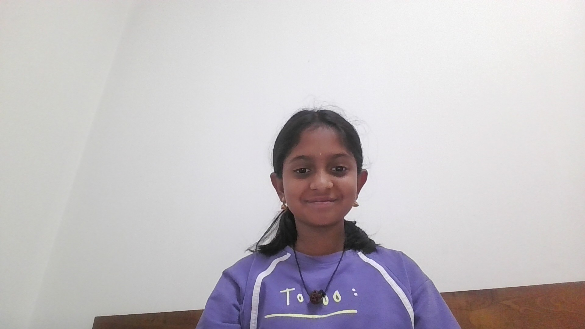

Hello everyone, my name is Vibha Venkat, and I am a 5th grade student at The Millennium School Dubai. I enjoy learning new things and taking part in different activities both in school and outside the classroom. I like challenging myself, trying new experiences, and improving my skills in the things that interest me. My biggest interests are Bharatanatyam, Western dance, and Football (Soccer). Bharatanatyam is a classical Indian dance form that requires dedication, discipline, and regular practice. Through Bharatanatyam, I learn expressions, rhythm, storytelling, and culture. It is a beautiful art form that allows me to express emotions and connect with traditional Indian culture. Along with Bharatanatyam, I also enjoy Western dance. Western dance allows me to explore energetic movements, different styles, and choreography. I enjoy learning new steps, practicing routines, and performing. Dance helps me stay active, confident, and creative. Another activity I enjoy very much is Football, also known as Soccer. I like playing Football because it is exciting and keeps me active. It also teaches teamwork, focus, and determination. Playing Football helps me work together with others, think quickly during the game, and always try my best. In school, I enjoy participating in activities where I can learn new skills, share ideas, and work with others. I like being involved in opportunities that help me grow as a student and build confidence. I also value punctuality and responsibility, and I always try to be organized and respectful of my commitments. I enjoy discovering new interests, developing my abilities, and continuing to learn from different experiences. I look forward to improving my skills and exploring many more opportunities in the future. ✨
I want to tell you a little about my sister, Smriti Venkat. She is in 10th grade at The Millennium School Dubai and is one of the most talented, hardworking, and passionate people I know. She always gives her best in everything she does and is dedicated to her interests, which makes her really inspiring to me and everyone around her. Her biggest passions are music, Bharatanatyam, and badminton. Music is something she loves deeply—it allows her to express herself, feel inspired, and connect with different emotions and styles. Whether she is listening, learning, or performing, she always puts her heart into music and enjoys every moment of it. I think music really shows her creative and expressive side, and it’s amazing to see how much joy it brings her. Bharatanatyam is another art form she is truly passionate about. This classical Indian dance requires dedication, discipline, and regular practice, and Smriti approaches it with full commitment. Through Bharatanatyam, she learns expressions, rhythm, storytelling, and cultural traditions. Watching her perform or practice is so inspiring because she blends grace, focus, and creativity in everything she does. It’s clear that Bharatanatyam is not just a hobby for her, but a way to express herself and connect with her culture in a meaningful way. Along with her artistic talents, Smriti also loves sports, especially badminton. She enjoys the excitement of the game, staying active, and continuously improving her skills. Playing badminton helps her develop focus, determination, and teamwork while having fun. She’s always pushing herself to do better, whether it’s practicing new techniques, competing in matches, or just enjoying the game with friends. Badminton shows her energy, drive, and competitive spirit, and it’s so cool to see how she balances her sports with her artistic interests. In school, Smriti is hardworking, punctual, and committed to her responsibilities. She enjoys taking part in activities that help her grow academically and personally. She likes sharing her ideas, learning new skills, and contributing to group projects or school events. Her focus, discipline, and dedication make her a role model for other students, and she always tries to do her best in every situation. I will always love her and she is my role model!!
I want to tell you a little about my dad, Venkatasubramanian Gurumurthy. He is a finance officer and a very young, energetic man who works hard but also knows how to make life fun. He is someone I really look up to because he is responsible, caring, and always full of energy. My dad is amazing in so many ways. He always makes sure we have everything we need and takes care of our family with dedication and love. Even though he is sometimes strict, especially about studies or following rules, he always balances it with humor and fun. He has this incredible way of making even serious moments lighter by cracking jokes, which makes life around him joyful and happy. He is very disciplined and dedicated to his work, but he also makes sure to spend quality time with us. I love that he can be serious when needed but also playful and funny in the middle of our daily routines. He teaches me important lessons about responsibility, hard work, and focus, but he also shows me that it’s important to enjoy life, laugh, and cherish the small moments. In our home, he keeps everything organized and makes sure we follow rules, but he does it in a way that’s kind, fair, and encouraging. Even when we are studying or busy with schoolwork, he finds ways to make us smile or laugh. That balance between discipline and fun is what makes him special. I feel really lucky to have a dad like him. He supports me, takes care of me, and always makes sure our family is happy and comfortable. He is strict when needed, loving all the time, hardworking, and fun in every way. I admire him a lot, and I am grateful for everything he does for me and our family. Having a dad like him makes me feel safe, cared for, and inspired every single day. ✨
I want to tell you a little about my mom, Srimathi Balakrishnan. She is a famous Bharatanatyam dancer and teacher, and she runs Sri Nrithyalaya in Dubai. Mom has dedicated her life to sharing her love for classical dance with students of all ages, and she inspires so many people through her talent, discipline, and passion for the arts. Her biggest passion is Bharatanatyam, and she has worked incredibly hard to master this classical Indian dance form. She not only performs on stage with grace and skill, but she also teaches it to students with dedication, patience, and creativity. Through her teaching, she inspires students to express themselves, learn about rhythm, storytelling, and culture, and gain confidence in their own abilities. Watching her perform or teach is always amazing because she puts her heart into every movement and every lesson. Mom is extremely creative and disciplined. She designs choreographies, plans performances, and organizes events for her students at Sri Nrithyalaya. Her professionalism and dedication have made her a respected and well-known figure in the Bharatanatyam community in Dubai. She works tirelessly to make sure her students learn well and perform beautifully, and she always encourages them to do their best. Even though she is famous and has a busy schedule, she is always kind, supportive, and loving to her family. She encourages me and my sister to follow our passions, work hard, and express ourselves in everything we do. She balances teaching, performing, and managing her dance school with care for her family, showing us that it’s possible to be dedicated and successful while also being loving and supportive. I am so proud of my mom because she is talented, hardworking, and inspiring. She has achieved so much through her art, and she continues to share her knowledge, passion, and creativity with students and audiences everywhere. Her dedication to Bharatanatyam and her students motivates me every day to work hard and follow my own passions. I feel really lucky to have a mom like her, who teaches me the importance of discipline, love, and passion in everything you do. ✨